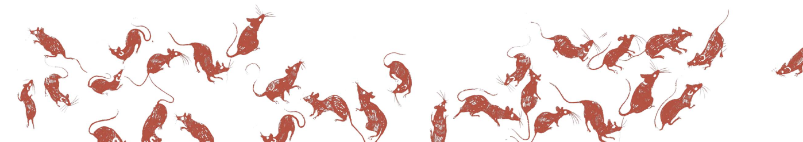

Проект начал свою работу в январе 2022 года, и уже 24 мая 2022 года сайт был открыт для посетителей. За прошедшее время мы опубликовали более 200 материалов , взятых из разных библиотек и личных коллекций историков, искусствоведов, коллекционеров. Вся информация доступна онлайн, с указанием источников. Для создная проекта была проведена большая историческая работа по систематизации большого объема данных. На основе проведенной работы были создны ресурсы элктронной библиотеки, курсы для взрослых и детей, адаптированные под разный возраст слушателей и слушательниц.
Более двадцати тысяч человек, ежедневно приходящих к нам на сайт, — это образованные люди, заинтересованные в дополнительных знаниях и готовые к усвоению сложного материала; это юноши и девушки, ищущеие свою историю; это дети, заинтересованные в изучении нового, которые любят сказки и интересные истории. У нас найдется история для каждого.
Мы считаем, что изучение культурных особенностей разных народов позволяет людям лучше понять не только себя, узнать свои корни и проникнуться древними традициями, но и лучше понять общественные процессы. Знать и помнить, как зарождалась государственность своей страны, какой путь прошел народ для того, чтобы стать полноценным обществом, как развивалась культура человечества — не просто долг человека и гражданина, но и захватывающее путешествие